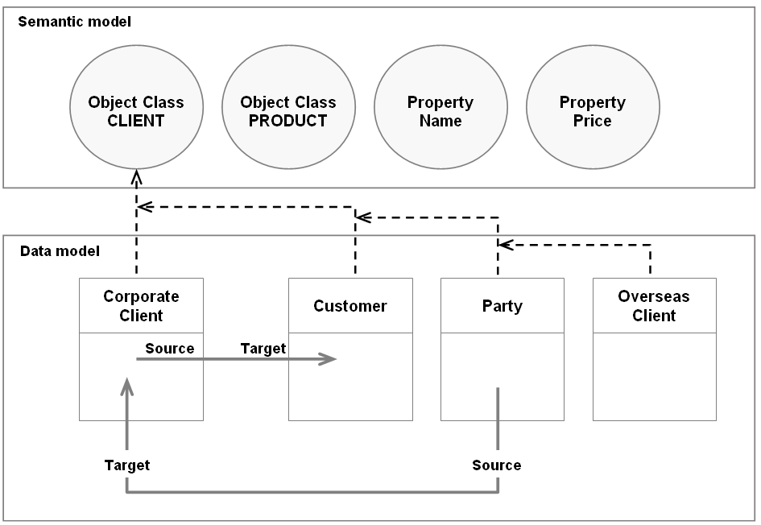

1. Functional scope
Section contents
1.1. Basic use case
EBX5's Data Exchange Add-On relies on a repository that collects all data mapping configurations. This repository automatically updates when a user executes a mapping operation that invokes the default data mapping. For instance, during export execution for the 'Client' table in the 'Sales' data set, the Data Exchange repository is enriched with new source and target 'Sales' applications of EBX5 and 'Default XML' types, respectively. The data mapping configuration between the source fields (EBX5 paths) and the target fields (XML nodes) are created automatically. The next time this export process is executed, the repository updates automatically if needed (changes in the data structure).
This data can be reused to create user-defined data mapping configurations. Indeed, the repository can be enriched manually if default mappings do not meet business requirements. For example, when the names of the metadata from the source are different from the target, a user-defined data mapping configuration must be declared.
1.2. Semantic model
Data mapping configurations can be enriched by creating links from Tables and Fields to corresponding business concepts also known as Object Class and Property items. A single Object Class can be linked to many tables, and a Property can be linked to many fields. An Object Class is a container of data, predominantly a Table, but can include a group of fields or a complex data type. A property is a business abstraction of a table's field. This vocabulary comes from the ISO11179 standard also used in the EBX5's Information Governance add-on.
The use of the semantic model is not mandatory to create data mapping configurations or to enable import, export and data transfer. Once the semantic model is configured, it facilitates the management of the data mapping configurations as follows:
Business data lineage.
Automatic data mapping.
Integration with the governance process.
1.2.1. Business data lineage
Data lineage shows a global view of how a data is transformed and conveyed between applications playing the roles of producers and consumers. When data lineage applies solely to the logical data model level, it is not easy to enforce a full understanding of the transformation. The following shows how two tables can have indirect data flow processes that cannot be figured out using just the logical level:
There are four tables: A, B, C and D. There is a data mapping from A to B and another mapping from C to D. Data lineage only recognizes two possible ways for data to flow A->B and C->D. But from a business point of view, table 'D' and table 'A' have similar significance. Even though a logical data mapping between A and D doesn't exist, the business data lineage must represent the global linking meaning between the four tables. It could be considered that there is a missing data mapping configuration between A and D.
In the following example, the 'CLIENT' Object Class is linked to the 'Corporate Client', 'Customer', 'Party' and 'Overseas Client' tables. From this Object Class, it is easy to get a full data lineage applied to the business concept of 'Client', including the information that the table 'Overseas Client' is not involved to feed the 'Customer' table.

Special notation: | |
|---|---|
| In the current version of the add-on, it is possible to link the Tables and Fields with the Object Class and Properties items, but the UI to display the data lineage is not yet available. |
1.2.2. Automatic data mapping
The semantic model is also used to create automatic data mappings between tables and fields sharing the same Object Class and Property items or a part of them. As illustrated below, the two tables 'Corporate Client' and 'Customer' share the same 'CLIENT' Object Class, meaning that they can be mapped with each other. The 'Id' and 'Code' fields are linked to the same 'Name' Property, meaning that they can also be mapped with each other.
Based on this link between the data model (Tables and Fields) and the semantic model (Object Classes and Properties), the add-on can automatically generate the data mapping configuration between source and target tables, such as, in the example below, the 'Corporate Client' table and the target 'Customer' table.

Special notation: | |
|---|---|
| You can refer to the appendix 'Automatic data mapping for transferring data' to get a use case relying on a semantic data model. |
1.2.3. Integration with the governance process
In the Information governance field, EBX5's Information Governance add-on allows you to manage all metadata of any data asset, such as: data models, workflow, rules, data spaces, applications, etc. This add-on uses Object Class and Property items as concepts to arrange the metadata and govern their definitions.
It is also possible to declare the parties and their roles involved in each Object Class and Property. For instance, if the 'Sales' application is referenced as the 'Consumer' of the 'Client' Object Class, it should be forbidden to declare this application as a source for a export process in Data Exchange.
Special notation: | |
|---|---|
| The integration between the add-ons Information Governance and Data Exchange will be available in the further version. |
1.3. Key definitions
The table on the next page defines Data Exchange repository key concepts.
This repository is located under the EBX5 'Administration' tab in the 'Data exchange' data space. It contains the following domains: Application, Semantic model, Data model and Data mapping.
Concept | Definition |
|---|---|
Semantic model | Using the semantic model is not mandatory to create data mapping configurations. However, it provides an improved data lineage view. Also, automatic data mapping between tables and fields-sharing the same Object Classes and properties-uses the semantic model. |
Object Class | An Object Class is a container that holds metadata such as a table, a group of fields or a complex data type. An Object Class can be linked to one to many Tables. |
Property | A Property is a business abstraction of a table's field, group of fields or complex data type. A Property can be linked to one to many Object Classes and Fields. |
Data model | A data model contains the Tables and Fields that comprise an application. If it is an EBX5 type application (referenced as a data set), it corresponds to the logical data model. When it is an XML type application, it corresponds to the XML paths. |
Table | When referring to an EBX5 type application, this is the table in the related logical data model. When referring to an XML type application, this is an XML path. |
Field | When referring to an EBX5 type application, this is the field in the related logical data model. When referring to an XML type application, this is an XML path. |
Application | The application level declares the portfolio of source and target applications involved in the import, export and transfer of data. |
Application by type | An application is declared for one to many format types:
|
Interface | An interface is comprised of a source and target application and enables data flow between the two. Import, export and transfer of data is not possible between applications without an interface definition. The add-on creates an interface when the end-user executes a default XML import or export. |
Data mapping | This level contains the actual mapping configuration between tables and fields. |
Table mapping | Defines the source and target tables. |
Field mapping | Defines the sources and target fields. |